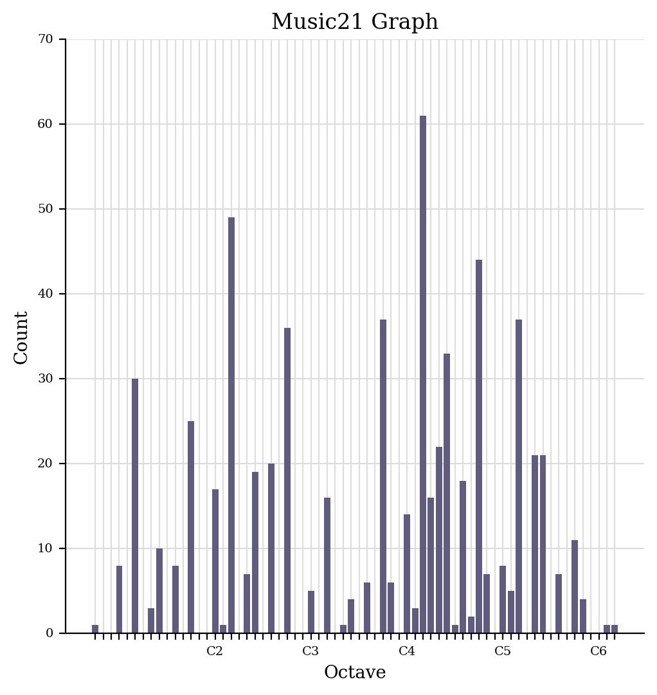

For this task, we have to create a jSymbolic analysis of our chosen piece.
| Title | OThey Crawl - Main Theme | Time Final Remix/td> | Now we are free - Gladiator Theme |
|---|---|---|---|
| Artist | Matt Oakley | Justin Woodwork Music | Rainer Lakmann |
| Composer | Matt Oakley | Hans Zimmer | Hans Zimmer & Lisa Gerrard |
| Copyright | CC BY-NC-SA | CC BY-NC-SA | CC BY-NC-SA |
| Genre | Movie Soundtrack | Movie Soundtrack | Movie Soundtrack |
| Source | Free Music Archive | Soundcloud | Soundcloud |
| File/Audio Format | mp3 | mp3 | mp3 |
| Number of Channels | 3 | 2 | 2 |
| Sample Rate | 44100 | 44100 | 44100 |
| Bits per second | 2116800 | 1411200 | 1411200 |
| Duration | 01:29 | 04:35 | 04:15 |
Task 2: Perform basic analysis of your 3 tracks in SonicVisualizer
They Crawl
Piano Roll

Scatter Plot